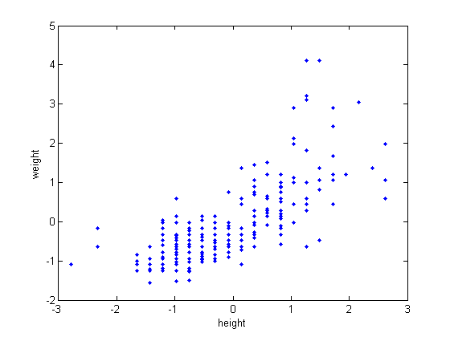
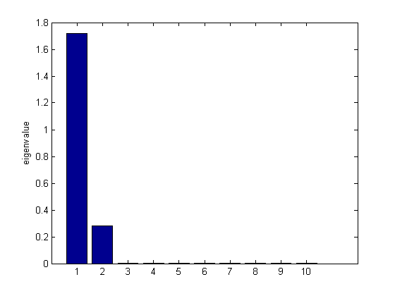
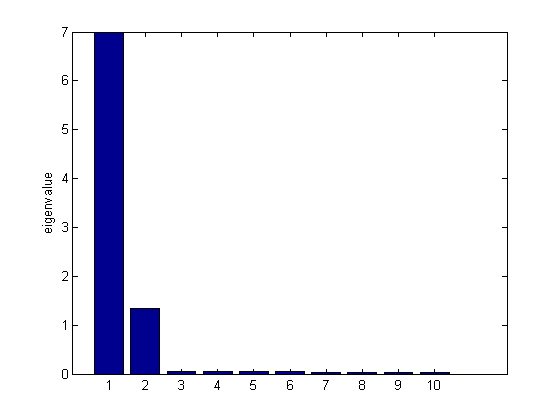
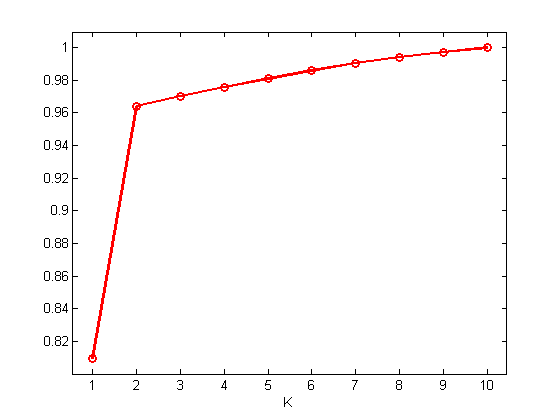

PCA Scree Plot
seed = 0; randn('state', seed);
data = loadData('heightWeight');
X = data(:,2:3);
X = standardize(X);
figure;
plot(X(:,1), X(:,2), '.');
xlabel('height'); ylabel('weight')
n = size(X,1);
Y = [X 0.01*randn(n,8)];
[B, Z, evals, Xrecon, mu] = pcaPmtk(Y);
figure;
bar(evals)
ylabel('eigenvalue')
printPmtkFigure('pcaDemo2dto10dEmbedEig');
figure;
plot(cumsum(evals)/sum(evals), 'ro-', 'linewidth', 2)
ylabel('proportion of variance')
xlabel('K')
axis_pct
printPmtkFigure('pcaDemo2dto10dEmbedScree')
A=randn(10,2);
Y=X*A';
Y=Y+randn(n,10).*0.2;
[B, Z, evals, Xrecon, mu] = pcaPmtk(Y);
figure;
bar(evals)
ylabel('eigenvalue')
printPmtkFigure('pcaDemo2dto10dRotateEig')
figure;
plot(cumsum(evals)/sum(evals), 'ko-')
ylabel('proportion of variance')
plot(cumsum(evals)/sum(evals), 'ro-', 'linewidth', 2)
axis_pct
xlabel('K')
printPmtkFigure('pcaDemo2dto10dRotateScree');
 

 